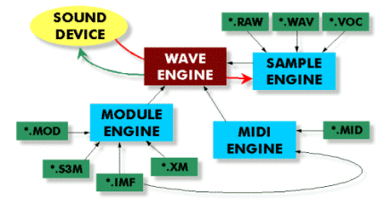

The IMAGO Audio Interface is a 32-bit protected mode sound system
for Watcom C++ and Visual C++ designed designed for the use in
games and multimedia presentations. The interface can play
music and sound effect files simultaneously.

The interface allows mixing of up to 256 digital 16-bit voices
into one output stream. Each of the voices can use it's own
playback rate, balance position, low frequency oscillator (LFO),
reverb and chorus settings, resonant low-pass filter
and four free definable envelopes. 32-bit mixing algorithms, oversampling-interpolation
and playback rates up to 60000 Hz result in very high output quality.
The library supports IMAGO Orpheus music files (IMF),
Fasttracker II Extended modules (XM), Protracker/Fasttracker moduls (MOD) and
Scream Tracker 3.2 modules (S3M) and playback through all Windows sample devices,
Sound Blaster 16, Sound Blaster AWE32 and Gravis Ultrasound cards.
|